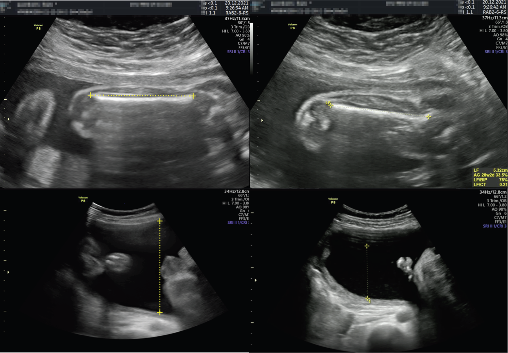

Página 11 · Vigilância aguda e cardiotocografia
Fechando o cerco: o perfil biofísico fetal
Se a cardiotocografia já é o primeiro exame a se alterar diante da hipóxia, quando ela não basta — e o perfil biofísico entra?
O perfil biofísico = cardiotoco + 4 parâmetros US
O perfil biofísico fetal é a cardiotocografia associada a quatro parâmetros ultrassonográficos: movimento respiratório fetal, movimento corpóreo fetal, tônus fetal e volume de líquido amniótico (VLA). São cinco componentes ao todo (a CTG + os quatro do ultrassom), e juntos varrem tanto o agudo quanto o crônico.
Interativo: acione cada componente para ver o que avalia e quando altera.
A síntese da aula: os cinco componentes (CTG + os quatro parâmetros de ultrassom) com a cascata temporal visível — a FCF/cardiotocografia altera primeiro (agudo) e o VLA/oligodrâmnio altera por último (crônico) —, e o perfil simplificado (CTG + VLA) destacado. Integra o Tabelão da Vitalidade Fetal.Interativo: clique em cada ponto ultrassonográfico para identificar o parâmetro.
Onde cada parâmetro é lido no ultrassom: tórax (movimento respiratório) · membros (movimento corpóreo) · flexão (tônus) · bolsões de líquido (VLA). Cada hotspot nomeia o parâmetro e o que avalia — quatro falam do agudo; só o VLA fala do crônico.A ordem de alteração
Aqui está a pegadinha temporal, e ela organiza tudo: a frequência cardíaca fetal (cardiotocografia) é o primeiro parâmetro a alterar; o oligodrâmnio (volume de líquido amniótico) é o último a alterar. O VLA demora porque é padrão de sofrimento crônico — leva tempo para o líquido reduzir. A FCF responde rápido, na hipóxia aguda; o líquido só cai quando o sofrimento já se arrasta. Primeiro a alterar: FCF. Último: VLA.
Cardiotoco normal dispensa o perfil
Consequência direta: como a cardiotocografia é o primeiro exame a alterar, uma cardiotocografia normal não obriga a complementar com o perfil biofísico. Se o parâmetro mais sensível e mais precoce está normal, os que alteram depois provavelmente também estão — não há por que somar o PBF de rotina a uma CTG tranquila.
O perfil simplificado
O perfil biofísico simplificado é a cardiotocografia + volume de líquido amniótico — ou seja, o primeiro a alterar somado ao último a alterar. A lógica é elegante: se o primeiro (agudo) e o último (crônico) estão normais, o meio dificilmente não está. Com ambos normais — sem parâmetro agudo nem crônico alterado — pode-se acompanhar a gestação/trabalho de parto com tranquilidade.
O perfil é mais do agudo
Recorte fino que cai: o perfil biofísico é mais voltado ao sofrimento agudo do que ao crônico. Cardiotocografia, movimento respiratório, movimento corpóreo e tônus fetais avaliam o agudo; o único parâmetro de sofrimento crônico do perfil é o líquido amniótico. Quatro dos cinco componentes falam do agudo; só o VLA fala do crônico.

O reconhecimento do parâmetro ultrassonográfico do PBF: o maior bolsão vertical de líquido amniótico medido com calipers.
Nos painéis inferiores, as áreas anecoicas (pretas) correspondem ao líquido amniótico, e a linha vertical com calipers delimita a profundidade do maior bolsão — usado para estimar o volume. No perfil biofísico, o ponto é reconhecer um bolsão mensurável, livre de partes fetais e de cordão (o Doppler colorido ajuda a excluir vasos dentro do "bolsão").
Fonte: Slimani S et al., Nature Communications 2023;14:7047, Fig. 8 — CC BY 4.0 · página de origem
O perfil não substitui o Doppler + fechamento do Tabelão
E o limite: o perfil biofísico não substitui o Doppler na paciente de alto risco — são exames complementares, não intercambiáveis. O PBF olha o comportamento biofísico do feto (agudo, sobretudo); o Doppler olha a hemodinâmica da vigilância crônica. Um não cobre o outro. É aqui que o Tabelão da Vitalidade Fetal fecha: as linhas da cardiotocografia e do perfil biofísico completam o quadro, e a linha do líquido/VLA faz link com a vigilância crônica já vista — o quadro inteiro, do crônico ao agudo, fica montado e consultável.
Tabelão da Vitalidade Fetal
- Cardiotoco — quando indicarAlto risco (pré-natal ≥30–32 sem, semanal); no baixo risco só o pós-datismo (>40 sem).aguardando
- Linha de baseMédia em 10 min; normal 110–160 (antigo 120–160); >160 taqui, <110 bradi — sustentado 10 min.aguardando
- VariabilidadeModerada 6–25 (ideal); aumentada >25; perda ≤5 (3 causas: asfixia/medicação/sono).aguardando
- Acelerações≥15 bpm × ≥15 s (retorno à basal); reativo = ≥2 em 20 min; presença exclui, ausência não confirma.aguardando
- Desacelerações (DIPs)DIP I coincide/benigno · DIP II tardio/asfixia · DIP III variável (cordão) — sem contração = DIP III.aguardando
- Categorias / laudoCat I normal · Cat II meio-termo · Cat III asfixia (var ≤5 + um de três, ou sinusoidal isolado).aguardando
- Perfil biofísicoCTG + 4 US (mov. resp., mov. corpóreo, tônus, VLA); simplificado = CTG + VLA.aguardando
- Líquido / VLAÚnico parâmetro de sofrimento crônico; último a alterar — link com a vigilância crônica (Doppler/ILA).aguardando
Quiz — fixação
Qual parâmetro do perfil biofísico se altera primeiro na hipóxia, e qual se altera por último — e o que isso implica para o "perfil simplificado"?
- B) Correta. FCF é a mais precoce (aguda); o VLA é a mais tardia (crônica). O simplificado combina o primeiro + o último a alterar (CTG + VLA).
- A) Troca as pontas da cascata. O líquido é o último (crônico), não o primeiro.
- C) Embaralha os parâmetros internos. O simplificado não são os quatro de US, e a ordem citada está errada.
- D) Nega a lógica temporal que a página constrói. A ordem é escalonada (agudo → crônico), não simultânea — é o que fundamenta o simplificado.
Sobre o perfil biofísico, assinale a correta:
- B) Correta. Quatro dos cinco componentes olham o agudo; só o VLA olha o crônico. E PBF e Doppler são complementares — um não cobre o outro.
- A) Inverte os dois pontos finos de uma vez. O PBF é mais do agudo, e não substitui o Doppler.
- C) Contraria a lógica da ordem. CTG normal dispensa complementar (é o primeiro a alterar), não obriga.
- D) Esquece o componente que dá nome à "cardio" no perfil. O PBF inclui a cardiotocografia (CTG + 4 US = 5 componentes).
Toda a leitura converge para um traçado real e uma decisão: um caso que aplica DIP, categoria e conduta de uma vez — e termina numa pergunta que fica em suspense.